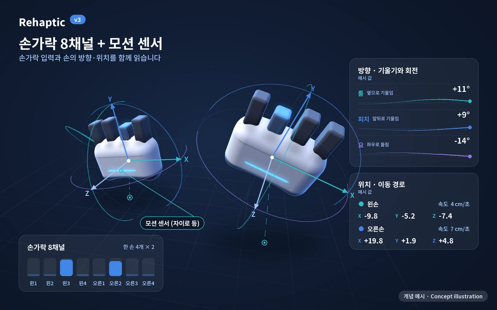
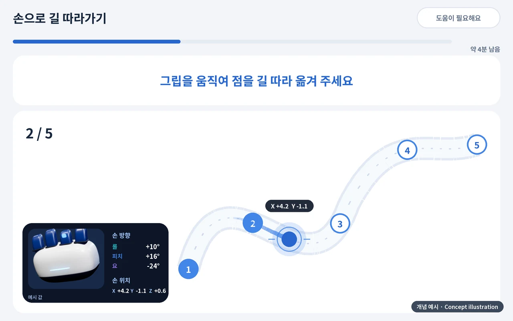
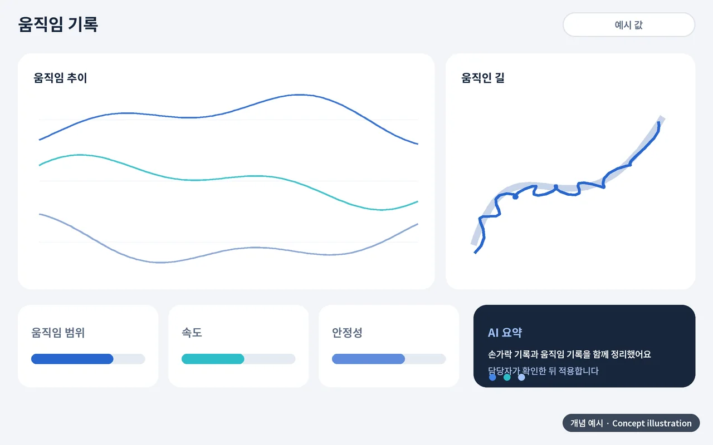
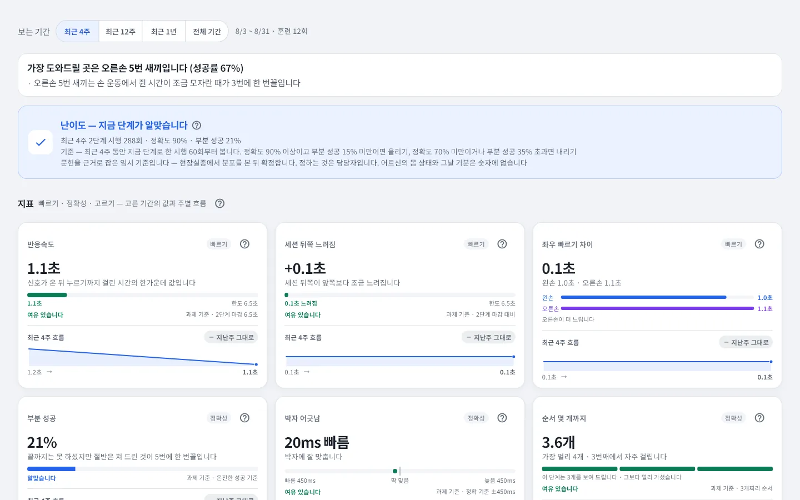

기술
손가락마다 재고,
기록으로 남깁니다
Rehaptic은 손가락별 입력과 일곱 가지 측정 영역을 바탕으로, 훈련을 어떻게 수행했는지를 자동으로 기록합니다. 기록이 쌓이면 난이도를 제안하고, 정하는 것은 사람입니다. 다음 세대에서는 모션 센서로 손의 움직임까지 읽고, AI 분석으로 이어집니다.
출시 예정
- 8독립 레버
한 손 4개 × 2 - 0.1초손가락별 레버 위치
신호 간격 - 7손가락별
측정 영역 - 3건국내 특허 출원
(등록 전)
플랫폼
입력에서 AI 분석까지, 하나의 플랫폼
손가락 입력을 읽고, 콘텐츠로 안내하고, 값으로 기록하고, 데이터로 분석합니다. 점선 항목은 다음 세대(v3) 계획입니다.
지금 구성 다음 세대(v3) 계획
무엇이 다른가요
손가락별 입력과 진동
한 손 네 개의 독립 레버가 손가락마다 따로 눌리고, 어느 손가락인지 진동 · 화면 · 소리로 함께 알려 줍니다. 독립 진동·입력 구조는 국내 특허 출원 중입니다(3건, 등록 전).
손가락별 측정 7가지
반응 · 분리 · 조절 · 지속 · 박자 · 순서 · 협응을 손가락별 값으로 자동 기록합니다. 한 문제(시행)마다 반응 시간, 판정, 눌린 깊이, 대신 눌린 손가락이 저장됩니다.
기관 운영에 맞춘 기록
이름 대신 식별 번호로 등록하고, 담당자가 기록을 적지 않아도 관리자 웹에 쌓입니다. 난이도는 제안만 하고, 적용은 담당자가 확인합니다.
그립에서 관리자 웹까지, 한 줄로 이어집니다
손가락의 움직임이 기록으로 남기까지 거치는 네 단계입니다.
-
햅틱 그립
왼손 · 오른손 한 쌍. 손가락별 독립 레버와 진동으로 신호를 주고 입력을 받습니다.
레버 8개 · 약 0.1초 신호 -
블루투스
태블릿 앱
안드로이드 태블릿에서 훈련을 안내하고, 한 문제(시행)마다 기록합니다. 인터넷이 끊겨도 모아 두었다가 다시 연결되면 보냅니다.
소리 · 큰 글씨 · 연습 후 시작 -
인터넷
기록 서버
식별 번호로 시행을 저장하고, 세션 · 주 단위로 집계하며, 난이도 제안을 계산합니다.
이름 대신 식별 번호 -
웹 브라우저
관리자 웹
센터 현황, 대상자별 기록, PDF 리포트와 CSV, 난이도 제안의 적용과 계정 관리를 합니다.
제안은 담당자가 적용
다음 세대 · v3
손가락에서 손의 움직임까지
다음 세대 그립(v3)은 모션 센서(자이로 등)를 담아, 손가락 입력과 함께 손의 방향(기울기·회전)과 위치, 이동 경로를 읽습니다. 새 콘텐츠와 AI 분석으로 이어집니다.
손의 방향과 위치를 읽는 센서
그립 안의 모션 센서가 손의 기울기와 회전, 그리고 어디서 어디로 움직였는지(위치와 이동 경로)를 읽습니다.
손 움직임 콘텐츠
그립을 쥔 채 손을 움직이는 새 콘텐츠를 만듭니다. 손가락 입력과 손의 움직임이 함께 쓰입니다.
측정 데이터 AI 분석
손가락 기록과 움직임 기록을 함께 모아 경향을 정리하고 구성을 추천합니다. 적용은 담당자가 확인합니다.

그립 + 모션 센서

손 움직임 콘텐츠

움직임 기록과 AI 요약
다음 세대(v3)는 개발 계획이며 항목과 일정은 바뀔 수 있습니다. 측정값은 훈련 수행 기록이며 진단이나 효과 판단이 아닙니다. 위 그림과 영상은 개념 예시이고 실제 제품·앱 화면이 아닙니다.
손가락별 측정 영역 7가지
각 영역을 어떤 값으로 재고 어떤 콘텐츠가 맡는지 정리했습니다. 영역 이름은 내부 설계 이름이며, 앱 화면에는 게임 이름만 나옵니다.
| 영역 | 재는 것 | 측정값 | 훈련 콘텐츠 |
|---|---|---|---|
| 반응 | 신호를 보고 누르기까지 걸린 시간 | 반응 속도 (ms, 중앙값) | 손 운동 · 숫자 따라 누르기의 반응 시간으로 측정 |
| 분리 | 목표 손가락만 따로 움직이기 | 대신 눌린 손가락의 수와 종류 | 손 운동 · 손가락 따로 |
| 조절 | 원하는 깊이로 레버를 누르기 | 눌린 깊이 (%, 레버 이동 거리) | 깊이 맞추기 |
| 지속 | 누른 채 정해진 시간 유지하기 | 그립 유지율 (%) | 손 운동 · 깊이 맞추기 |
| 박자 | 리듬에 맞춰 제때 누르기 | 리듬 정확도, 따라 눌린 시간 | 리듬 놀이 · 박자 따라 하기 |
| 순서 | 보여 준 순서를 기억해 같은 순서로 누르기 | 순서 재현 정확도 | 숫자 따라 누르기 |
| 협응 | 양손을 함께 사용하기 | 좌우 균형 (%) | 양손으로 하는 손 운동 · 리듬 놀이 |
콘텐츠마다 보는 영역이 다릅니다
하나의 콘텐츠가 여러 영역을 함께 다루고, 영역마다 맡는 콘텐츠가 이어집니다.
좌우로 밀어 다른 콘텐츠를 확인하세요.
| 영역 | 손 운동 | 리듬 놀이 | 숫자 따라 누르기 | 손가락 따로 | 깊이 맞추기 | 박자 따라 하기 |
|---|---|---|---|---|---|---|
| 반응 | 함께 봅니다 | 해당 없음 | 함께 봅니다 | 해당 없음 | 해당 없음 | 해당 없음 |
| 분리 | 주로 봅니다 | 해당 없음 | 함께 봅니다 | 주로 봅니다 | 해당 없음 | 해당 없음 |
| 조절 | 해당 없음 | 해당 없음 | 해당 없음 | 함께 봅니다 | 주로 봅니다 | 해당 없음 |
| 지속 | 주로 봅니다 | 함께 봅니다 | 해당 없음 | 해당 없음 | 함께 봅니다 | 해당 없음 |
| 박자 | 해당 없음 | 주로 봅니다 | 해당 없음 | 해당 없음 | 해당 없음 | 주로 봅니다 |
| 순서 | 해당 없음 | 해당 없음 | 주로 봅니다 | 해당 없음 | 해당 없음 | 해당 없음 |
| 협응 | 함께 봅니다 | 함께 봅니다 | 해당 없음 | 해당 없음 | 해당 없음 | 해당 없음 |
주로 보는 영역 함께 보는 영역 (반응은 손 운동 · 숫자 따라 누르기의 반응 시간으로 잽니다)
두더지 잡기는 반응·분리, 주먹으로 피하기는 협응·지속을 보는 콘텐츠입니다. 두더지 잡기의 반응 시간은 다른 콘텐츠의 반응 값과 합산하지 않습니다. 위 표는 사업계획서의 영역 표를 따르며 두 콘텐츠는 따로 적었습니다.
훈련 콘텐츠와 난이도 구조
콘텐츠마다 난이도 사다리가 있고, 난이도는 모양(단계 · 칸)과 속도로 정해집니다.
| 콘텐츠 | 어떻게 하나요 | 주로 보는 영역 | 난이도 칸 |
|---|---|---|---|
| 손 운동 | 켜진 번호의 손가락을 눌러 정해진 시간 동안 쥐고 있기. 한 손씩 · 양손 · 한 손에 둘 · 손마다 다르게 · 양손 둘씩, 다섯 가지 짜임을 한 바퀴 돕니다 | 지속 · 분리 (협응) | 13칸 |
| 리듬 놀이 | 배경음에 맞춰 내려오는 동그라미를 그 손가락으로 제때 누르기. 곡 한 번이 한 판입니다 | 박자 (협응 · 지속) | 19칸 |
| 숫자 따라 누르기 | 숫자를 하나씩 보고 기억해 같은 순서로 누르기. 5라운드가 한 블록입니다 | 순서 (분리) | 8칸 |
| 두더지 잡기 | 켜진 손가락을 눌러 올라온 두더지를 잡는 반응 놀이. 설명 → 연습 → 본 판 순서로 진행합니다 | 반응 · 분리 | 7칸 |
| 주먹으로 피하기 | 왼손 전체를 쥐면 왼쪽으로, 오른손 전체를 쥐면 오른쪽으로 한 칸씩 가며 내려오는 먹구름을 피합니다. 쥐었다 폈다가 다시 쥐어야 또 움직이며, 두 손이 함께 있어야 하는 활동입니다 | 협응 · 지속 | 10칸 |
| 손가락 따로 | 막대 네 개 중 목표 하나만 올리고 나머지는 가만히 두기 | 분리 (조절) | — |
| 깊이 맞추기 | 화면 막대의 띠 높이에 맞춰 정해진 깊이에서 머물기 | 조절 (지속) | — |
| 박자 따라 하기 | 박자를 더 깊이 다루는 활동 | 박자 | — |
| 계절 · 지역 테마 팩 | 계절과 지역을 소재로 한 콘텐츠 묶음. 담긴 콘텐츠의 영역을 그대로 따릅니다 | 지속 · 분리 · 협응 · 박자 · 순서 | — |
난이도 칸은 난이도 사다리의 단계 수이며, 「—」는 구성하고 있는 항목입니다.
측정에서 기록까지
그립의 신호가 손가락별 기록과 난이도 제안으로 이어지는 순서입니다.
그립 신호
레버 위치를 손가락별로 약 0.1초마다 보냅니다.
보정
담당자가 보정한 「편 상태 ~ 끝까지 누름」 길이를 기준으로 눌린 깊이(%)로 바꿔 읽습니다.
시행 기록
한 문제마다 손가락별 반응 시간 · 판정 · 눌린 깊이 · 대신 눌린 손가락을 자동 저장합니다.
집계
세션 · 주 단위로 모아 관리자 웹, PDF 리포트, CSV로 보여 줍니다.
제안
기록을 바탕으로 난이도를 권하고, 적용은 담당자가 확인합니다.
시행 한 건에 남는 값 예시 값
손 운동 · 왼손 2번
- 판정
- 성공
- 반응 시간
- 620 ms
- 눌린 깊이
- 78 %
- 대신 눌린 손가락
- 없음
세로 눈금은 눌림 인정 깊이(기본 65%, 50 · 65 · 80% 중 담당자가 선택)입니다. 위 값은 설명을 위한 가상의 예입니다.
한 문제의 판정 정확도 계산
손댄 문제 기준
- 성공
- 1.0점
- 부분 성공
- 0.5점
- 실패
- 0점
- 시간 초과
- 분모에서 빼고 따로 셈
손댄 문제가 없으면 정확도는 0이 아니라 「값 없음」입니다.
측정값은 이렇게 계산합니다
코드가 계산하는 식을 그대로 옮긴 정의입니다.
- 정확도
- (성공 1 · 부분 성공 0.5 · 실패 0)의 합 ÷ 손댄 문제 × 100. 시간 초과는 분모에서 빼고 따로 셉니다.
- 반응 속도
- 시간 초과와 리듬 놀이를 뺀 시행의 반응 시간(ms)의 중앙값. 리듬 놀이는 박자 지표로 따로 잽니다.
- 좌우 균형
- 손마다 (성공 1 · 부분 0.5 · 그 밖 0)의 평균을 구해 낮은 쪽 ÷ 높은 쪽 × 100. 양손으로 한 세션만 셉니다.
- 그립 유지율
- 손 운동에서 실제로 쥔 시간(목표 시간까지만 인정)의 합 ÷ 목표 시간의 합 × 100.
- 리듬 정확도
- (정확 + 좋음 × 0.5) ÷ 리듬 시행 × 100. 놓친 노트는 실패로 기록합니다.
- 눌린 깊이
- 한 시행 동안 목표 손가락 레버가 가장 깊이 들어간 때가 보정 길이의 몇 %인가(0~100). 힘이 아니라 레버가 들어간 거리이며, 같은 사용자의 다른 때와만 견줍니다.
- 대신 눌린 손가락
- 눌러야 할 손가락 대신(또는 함께) 다른 손가락이 눌린 횟수와 그 손가락들. 완전히 눌린 것만 세고, 새로 눌린 한 번만 셉니다.
눌린 깊이와 대신 눌린 손가락은 기록값이며 정확도 · 난이도 제안 식에는 들어가지 않습니다. 정의는 개발 중인 초안이며 바뀔 수 있습니다.
난이도는 제안하고, 정하는 것은 사람입니다
정확도만 보지 않고, 누르지 못해 생긴 시간 초과까지 함께 봅니다.
세는 시행
지금 난이도에서 최근 28일 동안, 난이도를 바꾼 뒤에 한 시행만 셉니다.
시간 초과를 함께 봅니다
시간 초과 몫이 20% 이상이면 정확도가 높아도 올리지 않고 「이어갑니다」와 까닭을 보여 줍니다. 50% 이상이면 「자리와 기기를 한번 확인해 보세요」를 덧붙입니다. 안 눌러서 생긴 시간 초과가 「어려움」으로 읽혀 난이도가 내려가는 일을 막기 위해서입니다.
바로 되돌리지 않습니다
난이도를 바꾼 뒤 두 번의 세션이 지나기 전에는 다시 권하지 않습니다.
앱이 몰래 바꾸지 않습니다
제안은 관리자 웹에서 [적용] · [나중에] · [무시]로 담당자가 정합니다. 적용 · 무시 · 바꿈과 그 근거는 이력에 남습니다.
기준값은 문헌을 바탕으로 잡은 임시 기준이며, 현장 실증에서 분포를 본 뒤 확정합니다.
기록이 쌓일수록 맞춰 가는 AI 맞춤
손가락별 수행 기록을 바탕으로, 사람마다 다른 훈련 구성을 추천하는 AI 맞춤을 준비하고 있습니다.
손가락 8 × 측정 영역 7 — 시행마다 쌓이는 기록의 격자 (개념도, 실제 값이 아닙니다)
기록
손가락별 값이 시행마다 자동으로 쌓입니다.
손 프로필
쌓인 기록에서 사람마다 잘 맞는 부분과 더 살펴볼 부분의 경향을 정리합니다.
구성 추천
표준판으로 콘텐츠별 시작 위치를 찾고, 약한 부분을 반영한 세션 구성을 추천합니다.
담당자 확인
추천을 보고 적용할지 정하는 것은 사람입니다. 앱이 사용자 몰래 바꾸지 않습니다.
훈련과 새 기록
적용한 구성으로 훈련하고, 새 기록이 다시 쌓여 다음 추천으로 이어집니다.
AI가 맡는 일
- 쌓인 기록에서 경향 정리
- 더 살펴볼 부분 찾기
- 세션 구성 추천
사람이 맡는 일
- 추천 확인과 적용
- 현장 운영과 어르신 상태 살피기
- 의학적 판단은 담당 의료인
AI 맞춤은 데이터 축적과 법률 검토, 의료진 협력이 먼저인 계획이며 시점은 정해지지 않았습니다. 훈련 구성 추천일 뿐 진단이나 치료 판단이 아닙니다.
손가락 단위로 보여 줍니다
관리자 웹의 분석 화면은 점수나 순위 대신 지표별 값과 최근 4주 흐름, 난이도 카드와 그 근거를 보여 줍니다. 가장 도와드릴 곳도 손가락 번호까지 짚어 줍니다.
- 기록손가락별 수행 기록과 리포트
- 제안수행 기록을 바탕으로 난이도 · 속도 제안
- 계획기록이 쌓이면 개인별 훈련 구성 추천 (AI 맞춤)

화면은 개발 환경의 예시 화면이며, 식별번호와 가상 데이터만 쓰였습니다. 제품 사양과 화면은 바뀔 수 있습니다.
관련 특허
손가락별 독립 입력과 진동, 훈련 구성에 대해 국내 특허 3건을 출원했습니다(출원 중, 등록 전).
| 출원 명칭 | 다루는 것 |
|---|---|
| 악력 강화 및 리듬 진동 자극을 이용한 인지·운동 복합 운동기구 | 악력과 리듬 진동 자극을 결합한 운동기구 |
| 햅틱 리듬 기반 다감각 손가락 독립성 훈련 시스템 및 이를 이용한 인지·운동기능 재활 방법 | 다감각 · 손가락 독립성 훈련 시스템 |
| 좌우 독립 페어링 햅틱 디바이스를 이용한 홀드 지속 판정 기반 다단계 통합 인지-운동 훈련 시스템 및 방법 | 좌우 독립 페어링, 지속 홀딩 판정 |
출원서에 적은 명칭 그대로이며, 제품의 효능이나 의료적 목적을 말하는 것이 아닙니다. 도면과 청구항은 공개 전이라 싣지 않았습니다.
수행 기록 안내측정값은 훈련을 어떻게 수행했는지에 대한 기록입니다. 질환이나 인지기능 상태에 대한 진단이 아니며 효과를 판단하지 않습니다. 의학적 판단은 담당 의료인의 몫입니다. Rehaptic은 의료기기가 아닙니다.